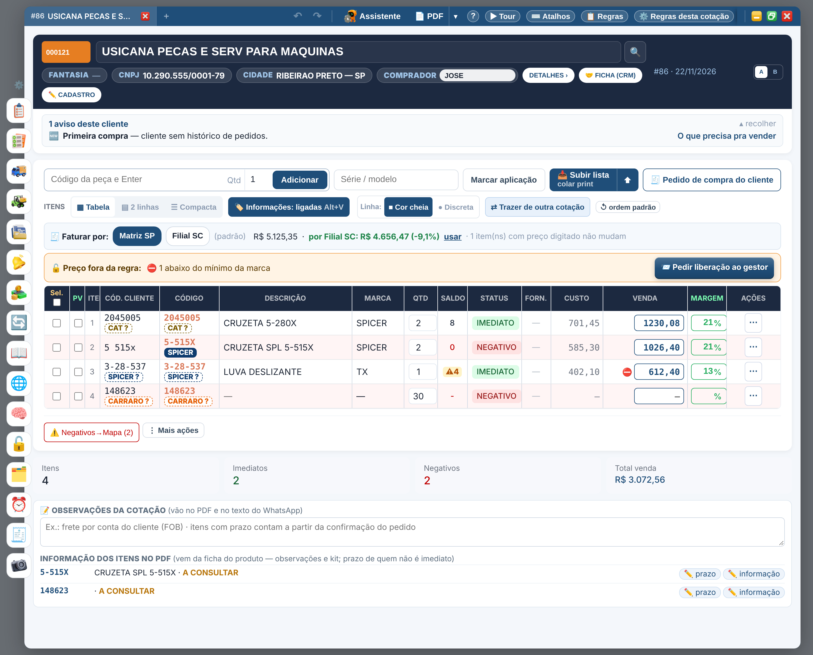
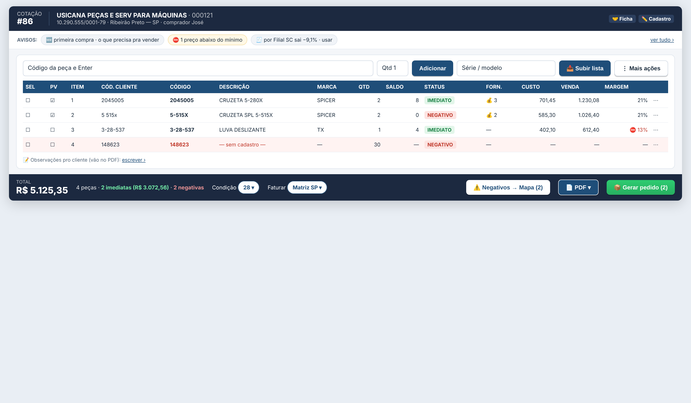

| Parte | Hoje | Na B |
|---|---|---|
| Barra azul de cima | Assistente, PDF, ?, Tour, Atalhos, Regras, Regras desta cotação | Fica igual (só PDF desce pra barra de baixo também) |
| Cliente | Cabeçalho alto com 6 campos + 4 botões em 2 linhas | 1 linha escura: nome, código, CNPJ, cidade, comprador + Ficha / Cadastro |
| Avisos | 3 caixas separadas: aviso do cliente, Faturar por, Preço fora da regra | 1 faixa de etiquetas ("ver tudo" abre o detalhe) |
| Botões dos itens | 2 linhas de botões (Tabela/2 linhas, Informações, Linha, Trazer, Marcar aplicação, Pedido do cliente…) | 1 linha: código, série/modelo, Subir lista e "⋮ Mais ações" com o resto |
| Total | Lá embaixo, e só das peças com saldo (R$ 3.072,56) | Barra presa embaixo, sempre à vista: total de tudo + quanto é imediato |
| Condição / faturar por | Condição sumiu do cabeçalho; Faturar por numa faixa no meio | Os dois na barra de baixo |
| Gerar pedido | Só aparece quando marca PV, perdido entre os botões de baixo | Botão verde fixo na barra de baixo, com quantos estão marcados |
| Observações e info do PDF | Caixa grande + lista de itens "A CONSULTAR" no fim da tela | Link curto "Observações pro cliente" (abre quando precisa) |
| Tabela | Igual | Igual — ganha um pouco mais de altura na tela |